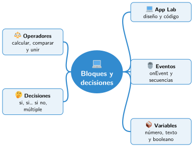

Bloque II · Programación
UD04 Programación por bloques I: variables, operadores y decisiones
Sesiones
- Sesión 4.1 El entorno de programación por bloques: Code.org
- Sesión 4.2 Eventos y secuencias
- Sesión 4.3 Variables y tipos de datos
- Sesión 4.4 Operadores aritméticos, de comparación y lógicos
- Sesión 4.5 Estructuras de decisión
Al terminar la unidad
Mapa mental de la unidad

✏️ Repasa la unidad con el mapa: tapa una rama y explica en voz alta lo que pone.